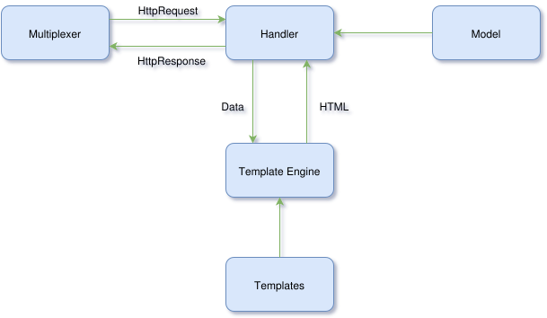
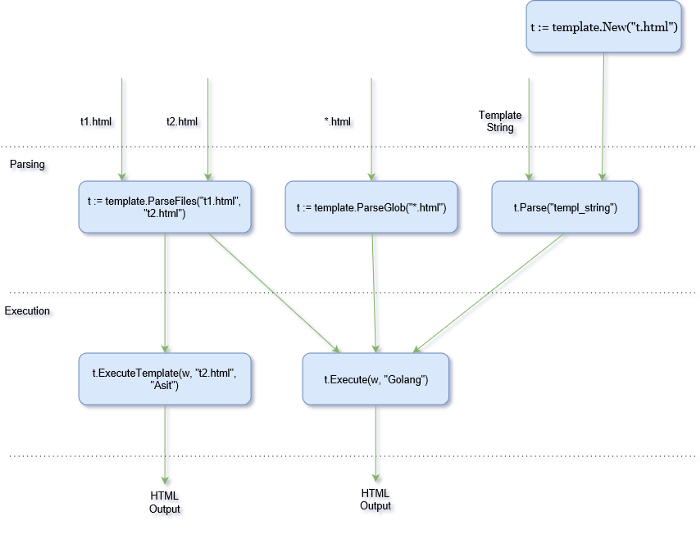

Golang Templates-1: Introduction
A template engine is a software application which generates dynamic HTML. This can be assumed as the view of the MVC paradigm. But, in reality, the template is exactly not view, a little bit of controller logic is added to make not too rigid.
In Golang, the handler(controller) calls the template engine, passing it the template(s) to be used, usually as a list of template files and the dynamic data. The template engine then generates the HTML and writes it to the ResponseWriter, which adds it to the HTTP response sends back to the client.

A template is a string or file containing one or more portions enclosed in double braces, {{…}}, called actions. These actions are processed by the template engine to produce dynamic HTML.
Steps to produce HTML from template file
- Parse the template string/file to create a parsed template struct.
- Execute the parsed template, passing a ResponseWriter and some data to it.

// main.go
package main
import (
"net/http"
"html/template"
)
func handler(w http.ResponseWriter, r *http.Request) {
t, _ := template.ParseFiles("view.html") //setp 1
t.Execute(w, "Hello World!") //step 2
}
func main() {
server := http.Server{
Addr: "127.0.0.1:8080",
}
http.HandleFunc("/view", handler)
server.ListenAndServe()
}
<!-- view.html-->
<html>
<head>
<title>First Program</title>
</head>
<body>
{{ . }}
</body>
</html>
Template Names
All templates are associated with a name.
- Template name are defined using template.New(). In case of ParseFiles() and ParseGlob(), the first file in the argument list and the first file picked up are the names respectively. https://golang.org/pkg/html/template/#New
- Templates can be looked up by using the name(template.Lookup()). https://golang.org/pkg/html/template/#Template.Lookup.
- Template name can be queried(template.Name()) https://golang.org/pkg/html/template/#Template.Name.
Parsing Templates
template.Parse() method takes a string and returns a parsed structured template.
// main2.go
package main
import (
"html/template"
"net/http"
)
var tmpl = `<html>
<head>
<title>Hello World!</title>
</head>
<body>
{{ . }}
</body>
</html>
`
func handler(w http.ResponseWriter, r *http.Request) {
t := template.New("main") //name of the template is main
t, _ = t.Parse(tmpl) // parsing of template string
t.Execute(w, "Hello World!")
}
func main() {
server := http.Server{
Addr: "127.0.0.1:8080",
}
http.HandleFunc("/view", handler)
server.ListenAndServe()
}
template.ParseFiles() is a variadic function call. It takes variable number arguments. template.ParseGlob() uses pattern matching.
Both of the above functions return a set of parsed templates. The returned template name will be the first file in PraseFiles() and the first file matched in the regular expression in ParseGlob(). https://golang.org/pkg/text/template/#ParseFiles
// main3.go
package main
import (
"net/http"
"html/template"
)
func handler1(w http.ResponseWriter, r *http.Request) {
t, _ := template.ParseFiles("t1.html", "t2.html")
t.Execute(w, "Asit")
}
func handler2(w http.ResponseWriter, r *http.Request) {
t, _ := template.ParseFiles("t1.html", "t2.html")
t.ExecuteTemplate(w, "t2.html", "Golang")
}
func main() {
server := http.Server{
Addr: "127.0.0.1:8080",
}
http.HandleFunc("/t1", handler1)
http.HandleFunc("/t2", handler2)
server.ListenAndServe()
}
<!-- t1.html-->
<html>
<head>
<title>T1 template</title>
</head>
<body>
Hi, My name is {{ . }}.
</body>
</html>
<!-- t2.html-->
<html>
<head>
<title>T2 template</title>
</head>
<body>
Hi, I am learning {{ . }}.
</body>
</html>
Executing Templates
The template.Execute() method applies a parsed template to the specified data object and writes the output to an output writer.The template.ExecuteTemplate() method works if the template contains multiple parsed template object. This is shown in the previous example.
template.ExecuteTemplate() calls template.Execute() internally. It basically looks for the named template and executes that one.
In Golang library, you can see the implementation.
Error Handling
All three parse methods returns error in case of failure. The standard library provides template.Must(), which wraps around a function that returns a pointer to a template and an error, and panics if the error is not a nil.
t := template.Must(template.ParseFiles("tmpl.html"))
While Executing, both the methods may fail and return error. But, by that time, some data might have been written to the buffer and sent back to browser. The programmer should handle this situation.